-
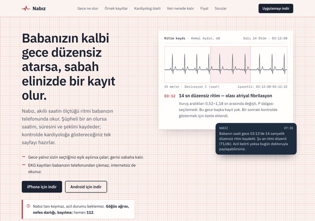
001
Nabız
Akıllı saatin kalp ritmi verisini telefonda yorumlar, düzensiz ritim şüphesini erken fark edip kardiyoloğa götürülecek bir özet hazırlar.
- Yorum
- Kardiyoloğa götürülen kâğıt
- Ziyaretçi
- Babası bypass geçirmiş, gece telefonu başucunda uyuyan endişeli yetişkin çocuk
- Çıkış
- güvende
- Font
- IBM Plex Sans + IBM Plex Mono
27/30 -
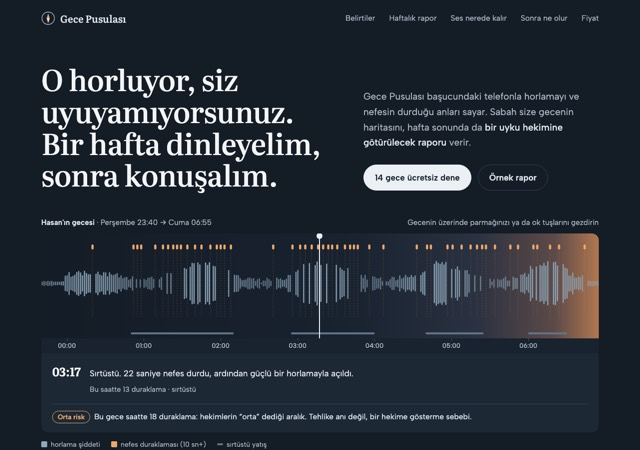
002
Gece Pusulası
Başucundaki telefon horlama ve nefes duraklamalarını dinler, ses kaydı cihazdan çıkmadan uyku apnesi riskini haftalık rapora döker.
- Yorum
- Geceden sabaha
- Ziyaretçi
- Eşinin horlamasından uyuyamayan, sabahları yorgun kalkan kişi
- Çıkış
- umutlu, dinlenmiş
- Font
- Literata + Albert Sans
27/30 -
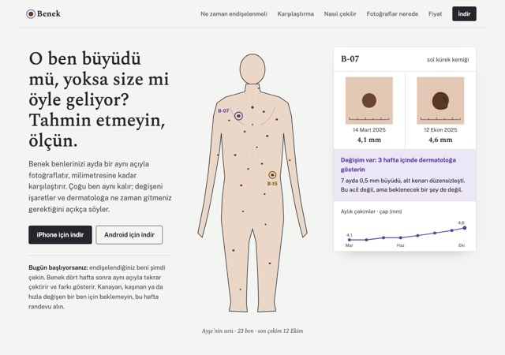
003
Benek
Vücuttaki benlerin fotoğraflarını aylar boyunca karşılaştırır, değişimi işaretler ve dermatoloğa ne zaman gidileceğini söyler; fotoğraflar telefonun kasasında kalır.
- Yorum
- Ben atlası
- Ziyaretçi
- Güneşte çok kalmış, bir benin büyüdüğünü sanan kaygılı yetişkin
- Çıkış
- sakin, kontrol bende
- Font
- Spectral + Public Sans
27/30 -
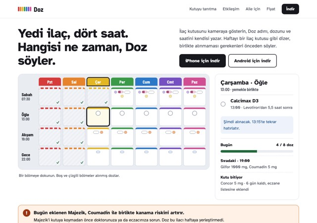
004
Doz
İlaç kutusunu kamerayla tanır, saatini hatırlatır, birlikte kullanılan ilaçlarda etkileşim uyarısı verir.
- Yorum
- Haftalık ilaç kutusu
- Ziyaretçi
- Günde yedi ilaç kullanan kronik hasta ya da onun ilaçlarını düzenleyen kızı
- Çıkış
- düzen, rahatlama
- Font
- Atkinson Hyperlegible + Barlow Semi Condensed
27/30 -
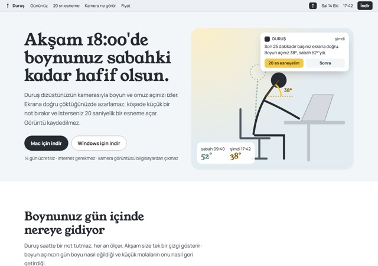
005
Duruş
Dizüstü kamerası omuz ve boyun açısını izler, görüntü kaydetmeden duruş bozulunca nazikçe uyarır ve mikro esneme önerir.
- Yorum
- Gün boyu boyun (menü çubuğu dürtüsüyle)
- Ziyaretçi
- Akşamları boyun ağrısıyla biten masa başı çalışan
- Çıkış
- hafiflemiş
- Font
- Young Serif + Manrope
25/30 -
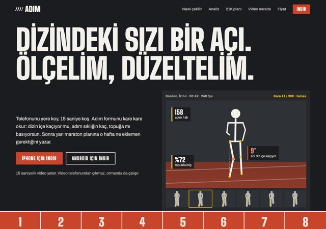
006
Adım
Telefon kamerasıyla koşu formunu analiz eder; diz içe kaçışı, adım sıklığı ve topuk vuruşunu ölçerek sakatlanmadan gelişmeyi sağlar.
- Yorum
- Pist ve kare kare
- Ziyaretçi
- İlk yarı maratonuna hazırlanan, dizinde sızı başlamış hevesli koşucu
- Çıkış
- enerjik, kararlı
- Font
- Big Shoulders Display + Archivo
27/30 -
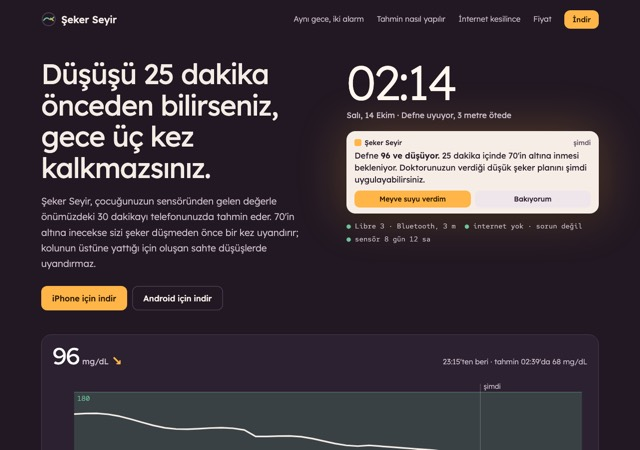
007
Şeker Seyir
Sürekli glukoz sensörü verisinden önümüzdeki 30 dakikanın tahminini telefonda yapar, gece hipoglisemi riskinde ebeveyni önceden uyandırır.
- Yorum
- Gece lambası
- Ziyaretçi
- Tip 1 diyabetli 8 yaşında çocuğu olan, gece üç kez kalkan ebeveyn
- Çıkış
- bu gece uyuyabilirim
- Font
- Lexend + Red Hat Mono
27/30 -
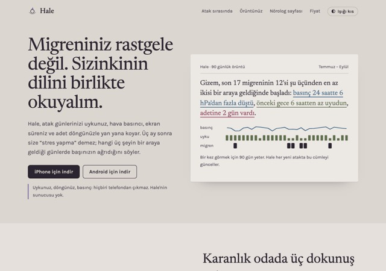
008
Hale
Migren günlüğü tutar; uyku, hava basıncı, ekran süresi ve adet döngüsünden kişisel tetikleyici örüntüsünü cihazda çıkarır.
- Yorum
- Perdesi çekili oda
- Ziyaretçi
- Ayda altı gün migrenle karanlık odada yatan, artık bıkmış kişi
- Çıkış
- anlaşılmış
- Font
- Newsreader + Karla
25/30 -
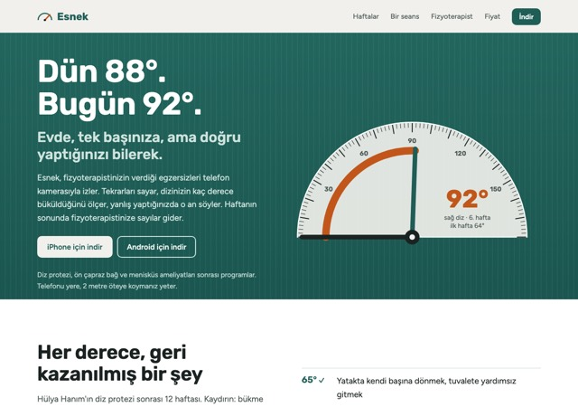
009
Esnek
Evde fizik tedavi egzersizlerini kamera ile iskelet takibi yaparak sayar, açıları ölçer ve fizyoterapiste ilerleme özeti gönderir.
- Yorum
- Gonyometre
- Ziyaretçi
- Diz ameliyatı sonrası evde yalnız egzersiz yapan, doğru yapıyor muyum diye düşünen hasta
- Çıkış
- ilerliyorum
- Font
- Rubik + Figtree
26/30 -
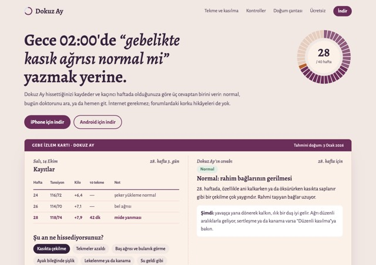
010
Dokuz Ay
Gebelik belirtilerini, tekmeleri ve kasılmaları kaydeder; hangi belirtinin doktoru aramayı gerektirdiğini çevrimdışı söyler, veriler kimseyle paylaşılmaz.
- Yorum
- Gebe izlem kartı (gebelik defterinden evrildi)
- Ziyaretçi
- İlk gebeliğinde her sızıda internette arama yapan anne adayı
- Çıkış
- sakin, hazır
- Font
- Alegreya + Alegreya Sans
25/30 -
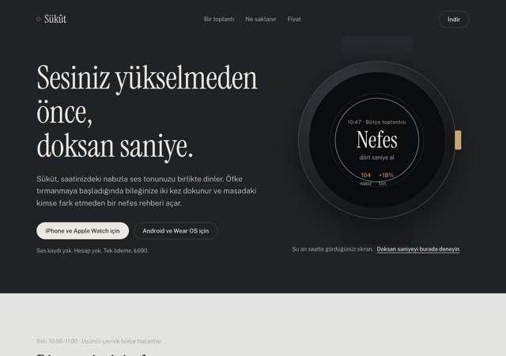
011
Sükût
Ses tonundaki ve nabızdaki stres yükselişini fark edip 90 saniyelik nefes rehberi başlatır; hiçbir ses kaydı saklanmaz.
- Yorum
- Bilekteki dokunuş
- Ziyaretçi
- İş toplantılarında öfkesini tutamamaktan yorulmuş yönetici
- Çıkış
- yatışmış
- Font
- Instrument Serif + Public Sans
26/30 -
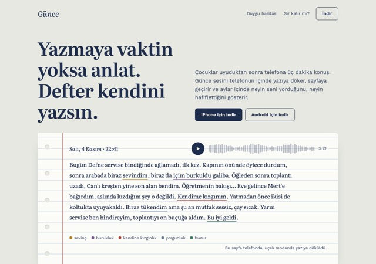
012
Günce
Akşamları konuşarak tutulan sesli günlüğü cihazda yazıya döker, aylar içinde duygu haritası çıkarır.
- Yorum
- Kendini yazan defter
- Ziyaretçi
- Yazmaya vakti olmayan ama kafasını boşaltmak isteyen genç ebeveyn
- Çıkış
- hafiflemiş, kendini tanıyan
- Font
- Literata + Work Sans
28/30 -
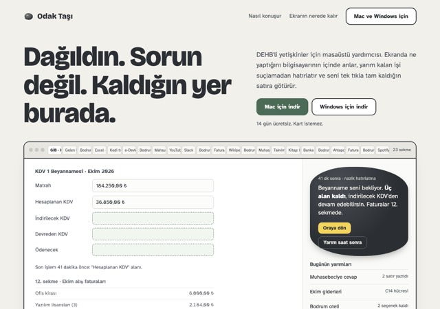
013
Odak Taşı
DEHB'li yetişkinler için ekranda ne yaptığını bağlamından anlayıp yarım kalan işi nazikçe hatırlatır; ceza değil, geri getirme.
- Yorum
- Masaüstündeki taş
- Ziyaretçi
- Yirmi sekme açık, üç işi yarım, kendine kızan yetişkin
- Çıkış
- kendine şefkatli, toparlanmış
- Font
- Bricolage Grotesque + Atkinson Hyperlegible
27/30 -
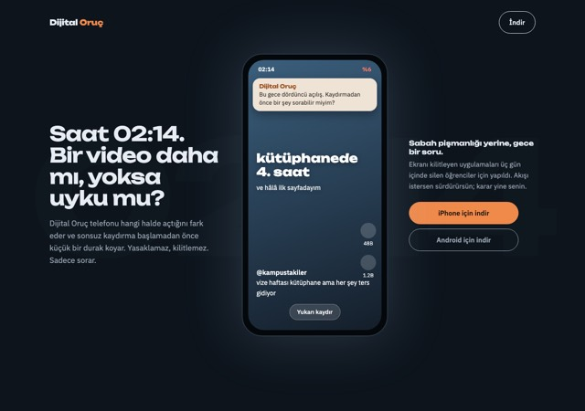
014
Dijital Oruç
Telefonu hangi duyguyla açtığını örüntüden anlar, sonsuz kaydırma başlamadan önce küçük bir durak koyar.
- Yorum
- 02:14'ten 08:00'e
- Ziyaretçi
- Gece ikide hâlâ kısa video izleyen, sabah pişman üniversiteli
- Çıkış
- özgür
- Font
- Unbounded + IBM Plex Sans
26/30 -
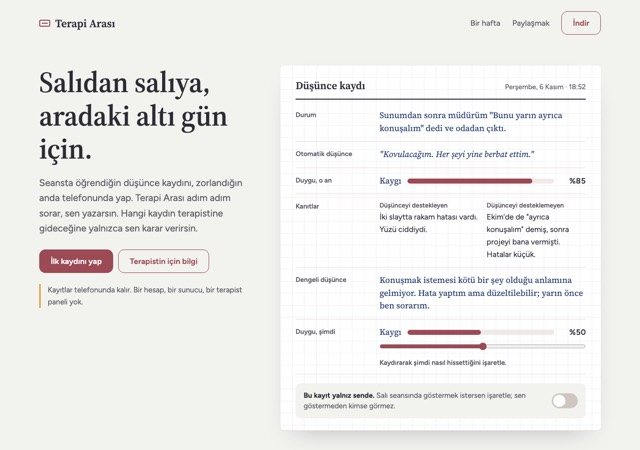
015
Terapi Arası
Seanslar arasında bilişsel davranışçı düşünce kaydı egzersizleri yaptırır; hangi kaydın terapistle paylaşılacağına danışan karar verir.
- Yorum
- Ödev kâğıdı
- Ziyaretçi
- Haftada bir terapiye giden, aradaki altı günde zorlanan danışan
- Çıkış
- desteklenmiş
- Font
- Source Serif 4 + Figtree
26/30 -
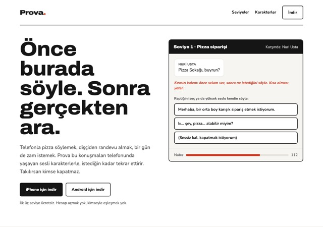
016
Prova
Sosyal kaygısı olanlar için zor konuşmaları (zam istemek, telefonla randevu almak) yerel bir sesli karakterle prova ettirir.
- Yorum
- Prova metni
- Ziyaretçi
- Telefonla pizza siparişi vermekten bile kaçınan genç
- Çıkış
- cesur
- Font
- Archivo + Nunito
26/30 -
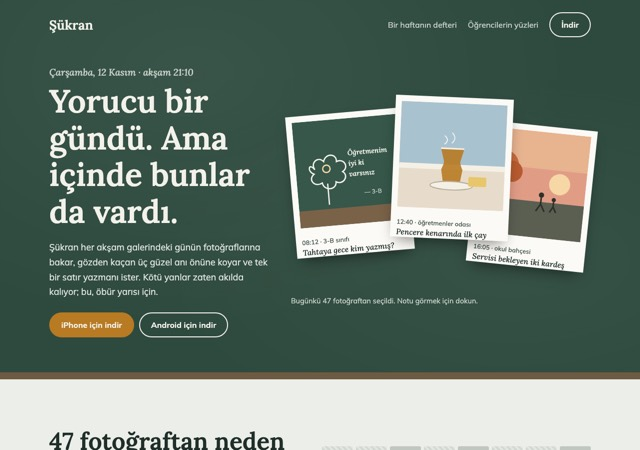
017
Şükran
Akşamları günün fotoğraflarından üç güzel anı seçip hatırlatır, kısa bir şükran notu yazdırır.
- Yorum
- Tahtada üç an
- Ziyaretçi
- Günü hep kötü yanlarıyla hatırlayan, yorgun öğretmen
- Çıkış
- yumuşamış, minnettar
- Font
- Lora + Mulish
29/30 -
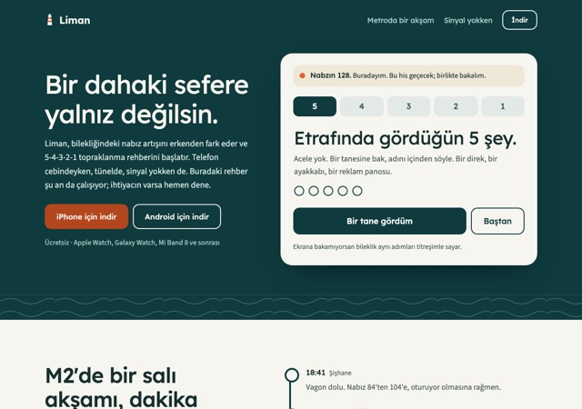
018
Liman
Panik atak başladığında bileklikteki nabız artışını fark eder, telefonsuz da çalışan 5-4-3-2-1 topraklanma rehberini başlatır.
- Yorum
- Fener ve rehber
- Ziyaretçi
- Metroda panik atak geçirmiş, bir daha olur diye korkan kişi
- Çıkış
- güvenli bir liman var
- Font
- Lexend + Source Sans 3
28/30 -
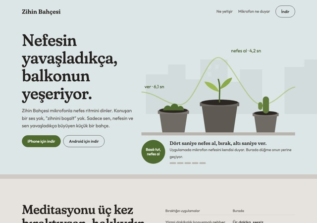
019
Zihin Bahçesi
Mikrofonla nefes ritmini algılayan meditasyon; nefes yavaşladıkça ekrandaki bahçe büyür.
- Yorum
- Balkon saksısı
- Ziyaretçi
- Meditasyonu üç kez deneyip bırakmış, sıkılan şehirli
- Çıkış
- sakin, merakla geri gelen
- Font
- Fraunces + Outfit
24/30 -
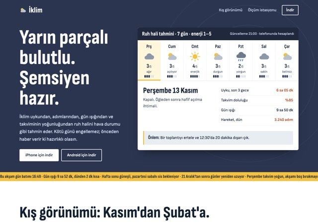
020
İklim
Ruh halini hava durumu gibi tahmin eder: uyku, hareket ve takvim yoğunluğundan 'yarın bulutlu' der, önlem önerir.
- Yorum
- Akşam bülteni
- Ziyaretçi
- Mevsimsel depresyonu olan, kışı korkuyla bekleyen kişi
- Çıkış
- hazırlıklı
- Font
- Sofia Sans Condensed + Sofia Sans
24/30 -
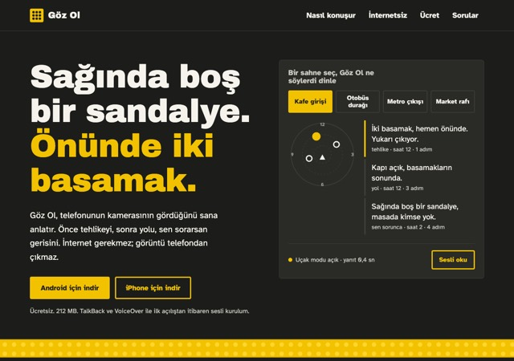
021
Göz Ol
Görme engelliler için kameranın gördüğü sahneyi internetsiz betimler: 'sağında boş bir sandalye, önünde iki basamak'.
- Yorum
- Sarı kılavuz yolu
- Ziyaretçi
- Yeni bir şehirde bağımsız dolaşmak isteyen görme engelli genç
- Çıkış
- bağımsız
- Font
- Atkinson Hyperlegible + Archivo Black
27/30 -
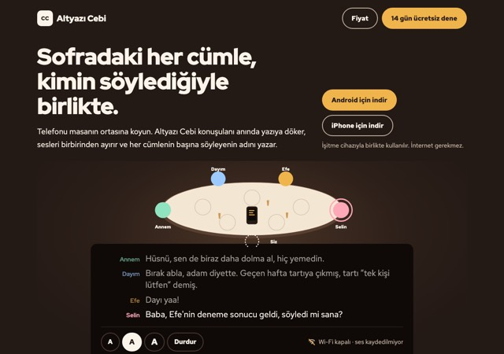
022
Altyazı Cebi
İşitme engelliler için konuşmaları gerçek zamanlı altyazıya çevirir, kimin konuştuğunu ayırır; ses cihazdan çıkmaz.
- Yorum
- Lamba altındaki sofra
- Ziyaretçi
- Aile sofrasında sohbeti kaçıran, işitme cihazı yetmeyen kişi
- Çıkış
- sohbete dahil
- Font
- Red Hat Display + Red Hat Text
26/30 -
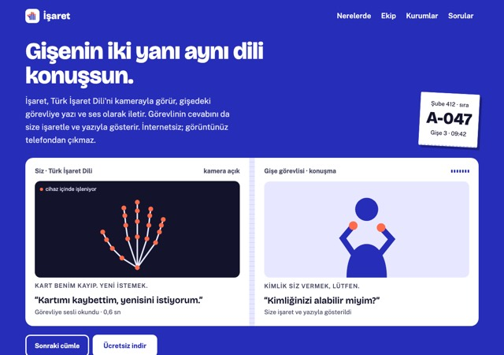
023
İşaret
Türk İşaret Dili'ni kamerayla yazıya ve sese, sesi de işarete çeviren iki yönlü tercüman.
- Yorum
- Gişenin iki yanı
- Ziyaretçi
- Bankada, hastanede derdini anlatamayan Sağır birey
- Çıkış
- duyulmuş
- Font
- Bricolage Grotesque + Public Sans
27/30 -
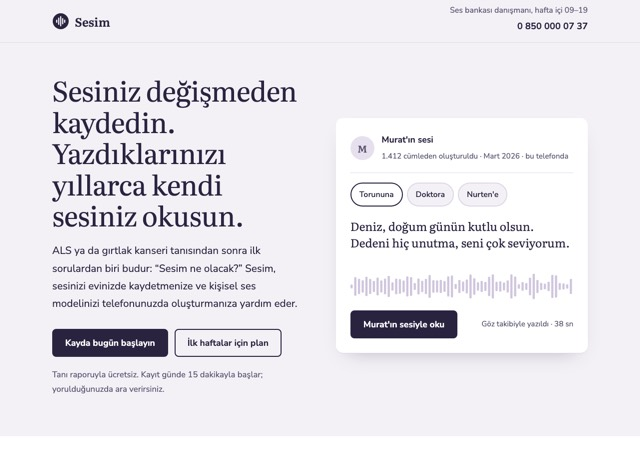
024
Sesim
ALS veya gırtlak kanseri hastaları için sesini kaybetmeden önce kaydedip yerelde kişisel ses modeli oluşturur, yazdıklarını kendi sesiyle okur.
- Yorum
- Sesin emanet defteri
- Ziyaretçi
- Yeni tanı almış, sesini kaybedecek olan hasta ve eşi
- Çıkış
- kendim kalabileceğim
- Font
- Literata + Nunito Sans
27/30 -
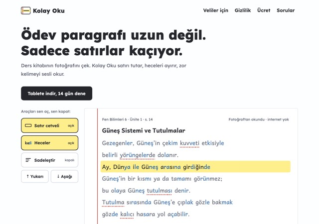
025
Kolay Oku
Disleksili okurlar için metni sadeleştirir, satır cetveli ve hece vurgusu ekler, zor kelimeyi sesli okur.
- Yorum
- Defter ve okuma cetveli
- Ziyaretçi
- Ödev okurken ağlayan disleksili ortaokullu ve annesi
- Çıkış
- yapabiliyorum
- Font
- Lexend + Andika
28/30 -
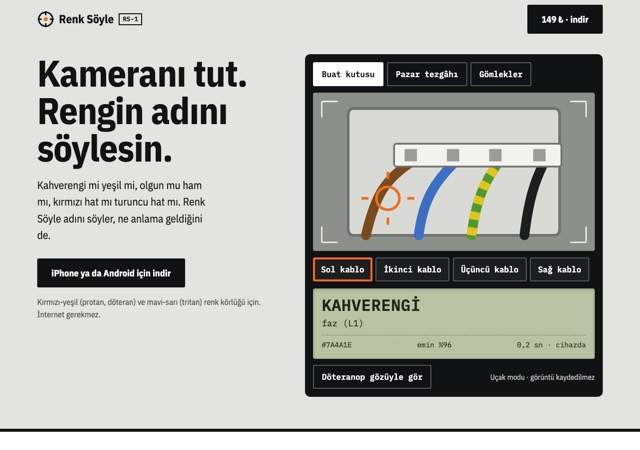
026
Renk Söyle
Renk körleri için kameranın gösterdiği rengi adıyla söyler, olgun meyveyi, kabloyu, haritadaki çizgiyi ayırt eder.
- Yorum
- Ölçü aleti
- Ziyaretçi
- Kıyafet seçerken eşine soran, elektrikçi renk körü
- Çıkış
- emin
- Font
- IBM Plex Sans Condensed + IBM Plex Mono
28/30 -
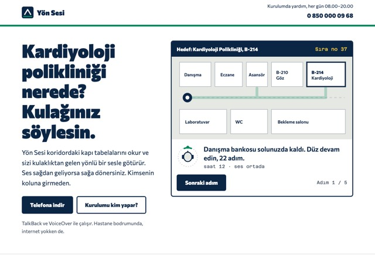
027
Yön Sesi
Görme engelliler için hastane, AVM gibi iç mekânlarda kapı tabelalarını okuyup 3B sesle yön tarif eder.
- Yorum
- Zemin çizgisi ve tabela
- Ziyaretçi
- Hastane koridorlarında poliklinik arayan görme engelli emekli
- Çıkış
- yolunu bilen
- Font
- Commissioner + Azeret Mono
28/30 -
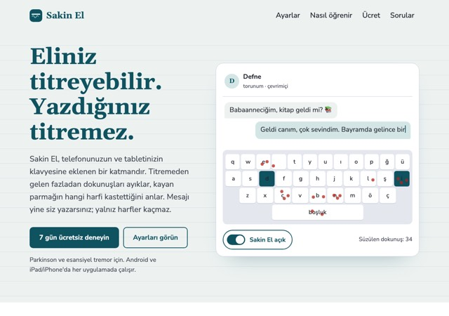
028
Sakin El
Parkinson ve esansiyel tremoru olanlar için dokunmatik ekrandaki titremeyi süzen, yanlış tıklamaları düzelten klavye ve dokunma katmanı.
- Yorum
- Öğretmenin mektubu
- Ziyaretçi
- Torununa mesaj yazarken harfleri kaçıran emekli öğretmen
- Çıkış
- saygın, rahat
- Font
- Gelasio + Nunito Sans
26/30 -
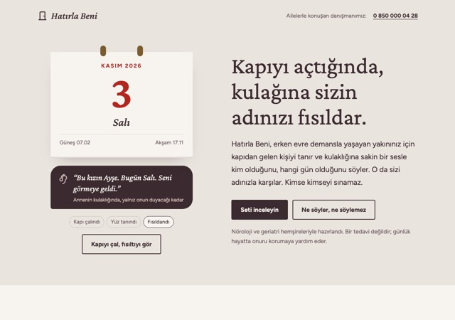
029
Hatırla Beni
Erken evre demansı olanlar için kapıdan gelen kişiyi tanır ve kulaklığa fısıldar: 'Bu kızın Ayşe, bugün Salı'.
- Yorum
- Kapı önü fısıltısı
- Ziyaretçi
- Annesinin kendisini tanımadığı günler başlamış olan kızı
- Çıkış
- onurunu koruyan bir yardım
- Font
- Crimson Pro + Figtree
28/30 -
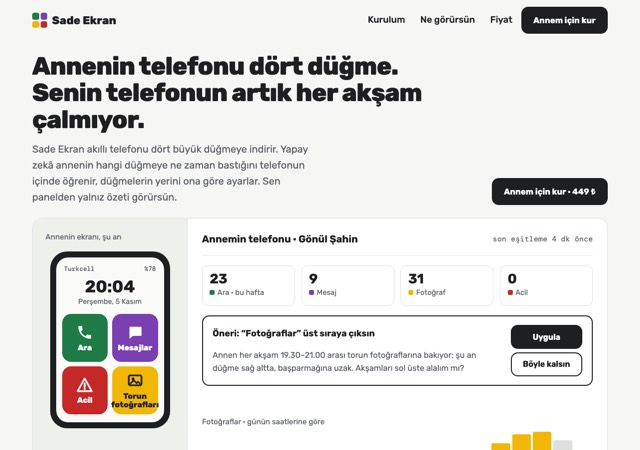
030
Sade Ekran
Telefonu dört büyük düğmeye indirir; yapay zekâ kullanıcının alışkanlığına göre hangi düğmenin nerede duracağını ayarlar.
- Yorum
- İki ekran: dört düğme ve uzaktan panel
- Ziyaretçi
- Annesine akıllı telefon alan, her gün telefonla destek veren oğul
- Çıkış
- rahatlamış
- Font
- Rubik + DM Mono
27/30 -
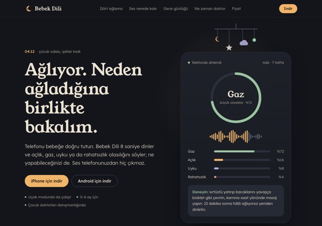
031
Bebek Dili
Bebeğin ağlamasını açlık, gaz, uyku ve rahatsızlık olarak sınıflandırır; ses telefondan çıkmaz.
- Yorum
- Gece lambası
- Ziyaretçi
- Gece dörtte ağlayan bebeği neden ağlıyor bilemeyen yeni baba
- Çıkış
- yetkin ebeveyn
- Font
- Young Serif + Lexend
26/30 -
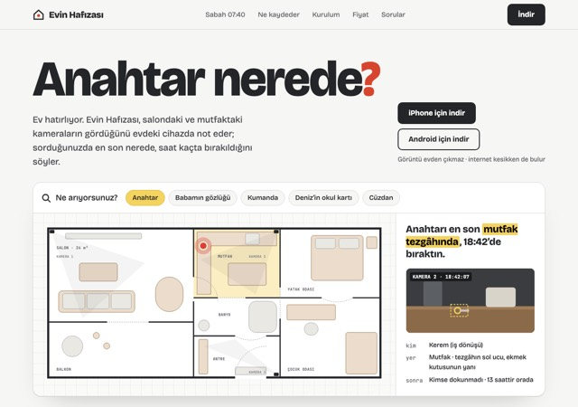
032
Evin Hafızası
Ev kameralarının gördüğünü cihazda indeksler: 'Anahtarını en son mutfak tezgâhında, 18:42'de bıraktın'.
- Yorum
- Kat planı
- Ziyaretçi
- Her sabah anahtar, gözlük, kumanda arayan kalabalık aile
- Çıkış
- zaman kazanmış, gülümseyen
- Font
- Bricolage Grotesque + JetBrains Mono
27/30 -
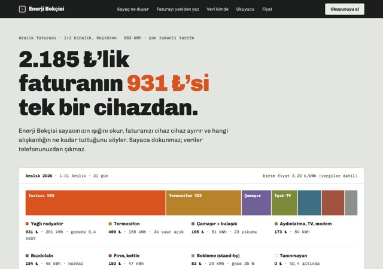
033
Enerji Bekçisi
Elektrik sayacının dalga formundan hangi cihazın ne kadar yaktığını ayırır, faturayı düşüren alışkanlık önerir.
- Yorum
- Fatura söküm
- Ziyaretçi
- Kış faturasını görüp şok olmuş kiracı
- Çıkış
- kontrolde
- Font
- Chivo + Chivo Mono
27/30 -
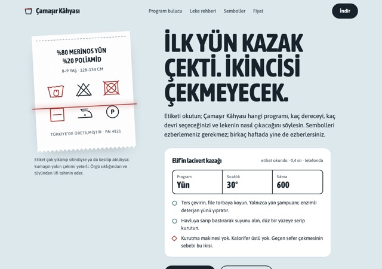
034
Çamaşır Kâhyası
Kıyafet etiketini ve lekeyi kamerayla okur, makine programını ve leke çözümünü söyler.
- Yorum
- Bakım etiketi
- Ziyaretçi
- Kızının ilk yün kazağını çektirmiş baba
- Çıkış
- ustalaşmış
- Font
- Asap Condensed + Asap
26/30 -
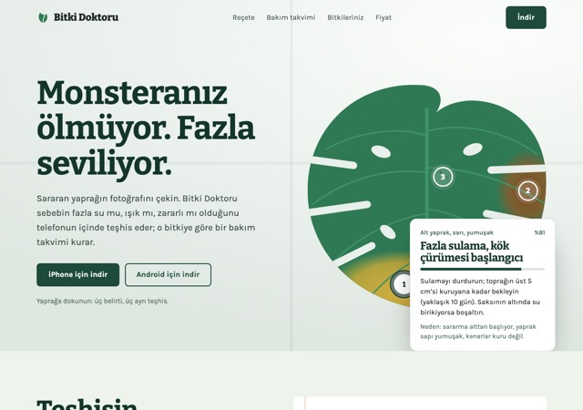
035
Bitki Doktoru
Ev bitkisinin yaprağını çeker, sararmanın nedenini (fazla su, ışık, zararlı) çevrimdışı teşhis eder ve bakım takvimi kurar.
- Yorum
- Yaprak ve reçete
- Ziyaretçi
- Üçüncü monsterası ölmek üzere olan apartman bahçıvanı
- Çıkış
- yeşil eller
- Font
- Bitter + Karla
27/30 -
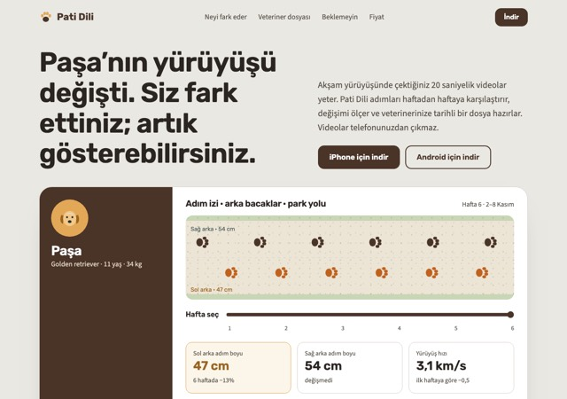
036
Pati Dili
Köpek ve kedinin videolarından topallama, kaşınma, iştahsızlık gibi değişimleri fark eder, veteriner için zaman çizelgesi hazırlar.
- Yorum
- Adım izi ve veteriner dosyası
- Ziyaretçi
- Yaşlı köpeğinin yürüyüşünün değiştiğinden şüphelenen sahip
- Çıkış
- dostunu anlayan
- Font
- Rubik + Source Sans 3
25/30 -
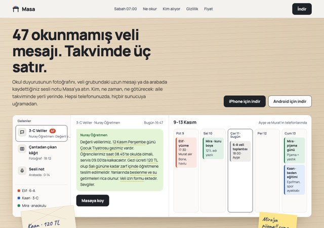
037
Masa
Okul duyurusunun fotoğrafını, WhatsApp mesajını, sesli notu aile takvimine çevirir; kim, ne zaman, ne götürecek.
- Yorum
- Mutfak masası + aile paneli
- Ziyaretçi
- Üç çocuklu, veli gruplarında boğulan çalışan anne
- Çıkış
- her şey yerli yerinde
- Font
- Manrope + Caveat
25/30 -
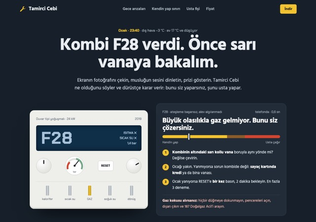
038
Tamirci Cebi
Kombinin hata kodunu, damlayan musluğun sesini, prizdeki yanığı tanıyıp 'kendin yap mı, usta mı çağır' der.
- Yorum
- Gece kombi dolabı
- Ziyaretçi
- Kış gecesi kombisi F28 hatası veren ev sahibi
- Çıkış
- elinden iş gelen
- Font
- Hind + Chakra Petch
27/30 -
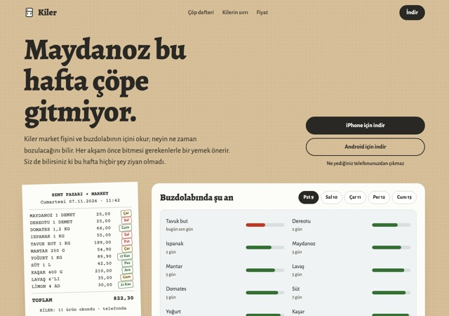
039
Kiler
Buzdolabı kamerası ve market fişinden ne olduğunu, ne zaman bozulacağını takip eder; israfı azaltan menü önerir.
- Yorum
- Fiş ve raf
- Ziyaretçi
- Her hafta çürümüş maydanoz atan, israftan utanan çift
- Çıkış
- tutumlu, vicdanı rahat
- Font
- Alegreya + Courier Prime
26/30 -
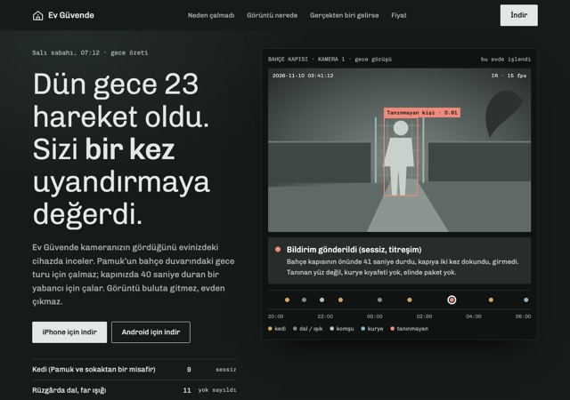
040
Ev Güvende
Güvenlik kamerası görüntüsünü buluta göndermeden cihazda inceler; kedi, kurye ve yabancıyı ayırır, gereksiz alarm vermez.
- Yorum
- Sabah özeti + gece kaydı
- Ziyaretçi
- Kamerası her gece kedi için alarm veren, buluta video göndermekten çekinen ev sahibi
- Çıkış
- huzurlu
- Font
- Chivo + Chivo Mono
28/30 -
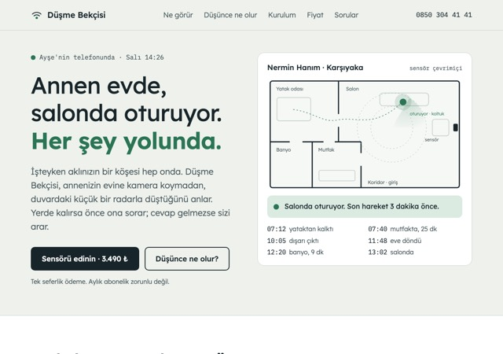
041
Düşme Bekçisi
Kamera kullanmadan, odadaki radar sensörüyle yaşlının düşmesini algılar, yerde kaldıysa yakınını arar.
- Yorum
- Annenin evinden canlı durum satırı
- Ziyaretçi
- Annesi tek başına yaşayan, işten her saat arayan kızı
- Çıkış
- içi rahat
- Font
- Lexend + IBM Plex Mono
27/30 -
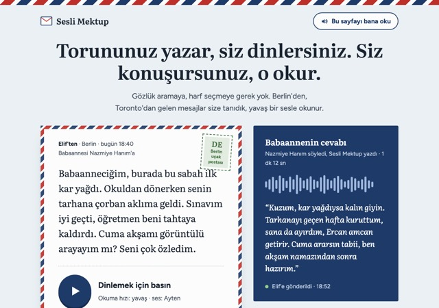
042
Sesli Mektup
Torunların yazdığı mesajları büyükannenin anlayacağı sesle okur, onun sesli cevabını yazıya döker.
- Yorum
- Uçak postası zarfı
- Ziyaretçi
- Yurtdışındaki torunuyla konuşamayan, okuma güçlüğü çeken nine
- Çıkış
- yakın
- Font
- Literata + Figtree
27/30 -
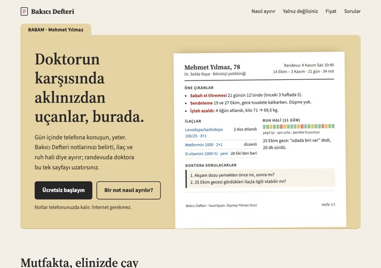
043
Bakıcı Defteri
Hasta yakını için bakım günlüğü: sesli notları belirti, ilaç ve ruh hali olarak ayırır, doktora tek sayfa özet çıkarır.
- Yorum
- Hasta dosyası ve tek sayfa doktor özeti
- Ziyaretçi
- Babasına bakan, doktora gidince her şeyi unutan yorgun kız
- Çıkış
- yalnız değil
- Font
- Source Serif 4 + Source Sans 3
27/30 -
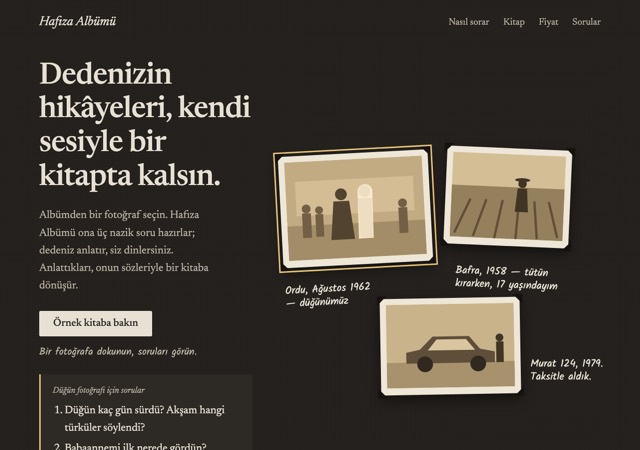
044
Hafıza Albümü
Eski aile fotoğraflarından anı terapisi için sorular üretir, yaşlının anlattıklarını hikâye kitabına dönüştürür.
- Yorum
- Siyah kartonlu aile albümü
- Ziyaretçi
- Dedesinin hikâyeleri kaybolmadan kaydetmek isteyen torun
- Çıkış
- miras korunmuş
- Font
- Newsreader + Kalam
28/30 -
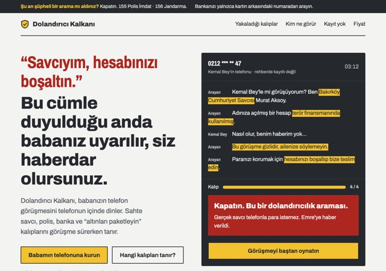
045
Dolandırıcı Kalkanı
Telefon görüşmesini cihazda dinler, 'savcıyım, hesabınızı boşaltın' kalıplarını yakalayıp yaşlıyı ve yakınını uyarır.
- Yorum
- Görüşmedeki ikinci kulak
- Ziyaretçi
- Babası 'polis' diye arayan dolandırıcıya neredeyse para gönderecek olan oğul
- Çıkış
- korunaklı
- Font
- Archivo + Archivo Narrow
27/30 -
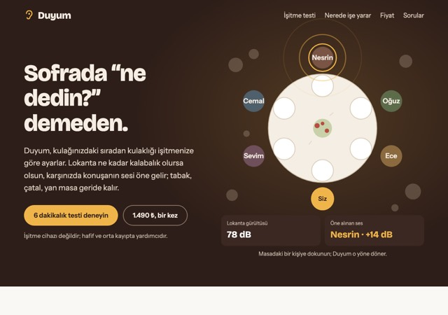
046
Duyum
Sıradan kulaklığı işitme testine göre ayarlanmış yardımcıya çevirir; kalabalık lokantada konuşanın sesini öne alır.
- Yorum
- Lokanta sofrası, yukarıdan
- Ziyaretçi
- İşitme cihazına para veremeyen, sofrada 'ne dedin' demekten utanan emekli
- Çıkış
- sofraya dönmüş
- Font
- Bricolage Grotesque + Instrument Sans
27/30 -
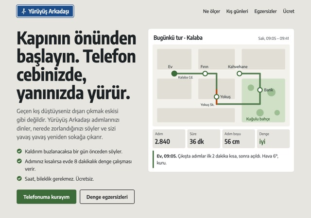
047
Yürüyüş Arkadaşı
Cepteki telefonla yürüyüş dengesini ve adım uzunluğunu izler, düşme riski artınca denge egzersizi önerir.
- Yorum
- Mahalle turu ve sokak tabelası
- Ziyaretçi
- Geçen kış buzda düşmüş, dışarı çıkmaya korkan 72 yaşında adam
- Çıkış
- yeniden sokakta
- Font
- Encode Sans Condensed + Encode Sans
27/30 -
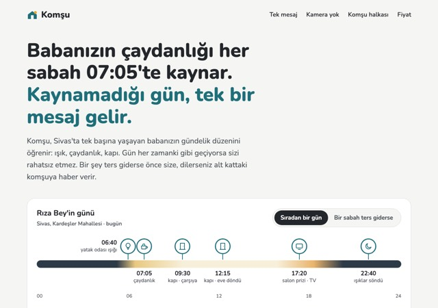
048
Komşu
Yalnız yaşayanın günlük rutinini (çaydanlık, kapı, ışık) öğrenir; rutin bozulursa yakına tek mesaj atar, kamera yok.
- Yorum
- Bir günün ritmi ve mahalle halkası
- Ziyaretçi
- İstanbul'da yaşayan, babası Sivas'ta tek başına kalan oğul
- Çıkış
- yakın hissetmek
- Font
- Nunito
27/30 -
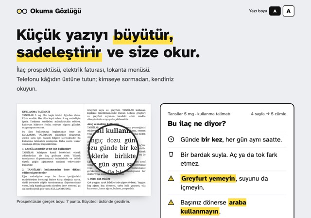
049
Okuma Gözlüğü
İlaç prospektüsünü, faturayı, menüyü kamerayla büyütür, sadeleştirir ve sesli okur.
- Yorum
- Büyüteç ve fosforlu kalem
- Ziyaretçi
- Gözlüğü olsa da prospektüsün minik yazısını okuyamayan teyze
- Çıkış
- bağımsız
- Font
- Atkinson Hyperlegible + Noto Serif
27/30 -
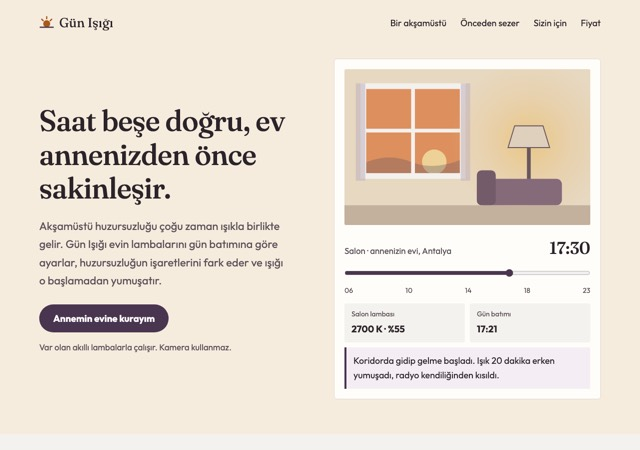
050
Gün Işığı
Demanslı yaşlıların akşam huzursuzluğu için evin akıllı ışıklarını günün ritmine göre ayarlar, huzursuzluğu önceden sezer.
- Yorum
- Pencereden giren günün eğrisi
- Ziyaretçi
- Annesi her akşamüstü huzursuzlaşan bakım veren
- Çıkış
- sakin akşamlar
- Font
- Fraunces + Outfit
26/30 -
051
Hece
Okumayı yeni söken çocuğu sesli okurken dinler, takıldığı heceyi sabırla tekrar ettirir; ses kaydı saklanmaz.
- Yorum
- Kılavuz çizgili okuma defteri
- Ziyaretçi
- Birinci sınıftaki çocuğuyla akşam okuma saatinde sabrı tükenen ebeveyn
- Çıkış
- gururlu
- Font
- Andika
26/30 -
052
Ödev Feneri
Matematik sorusunun fotoğrafını çeker ama cevabı vermez; çocuğun takıldığı adımı bulup ipucu verir.
- Yorum
- Kareli defterde fener ışığı
- Ziyaretçi
- Kesirleri anlatmaya çalışırken kendi de unuttuğunu fark eden baba
- Çıkış
- çocuğum kendisi çözdü
- Font
- Bricolage Grotesque + Caveat
27/30 -
053
Masal Makinesi
Çocuğun çizdiği resmi tarar, içindeki karakterlerle internetsiz uyku masalı anlatır.
- Yorum
- Gece lambası altında pastel boya resim
- Ziyaretçi
- Her gece yeni masal uydurmaktan tükenmiş ebeveyn
- Çıkış
- büyülenmiş
- Font
- Young Serif + Figtree
26/30 -
054
Konuş Bakalım
İngilizce konuşma pratiği için yerel sesli karakter; telaffuzu düzeltir, utanmadan hata yapma alanı açar.
- Yorum
- Basılı tut, konuş: sesli mesaj sohbeti
- Ziyaretçi
- Gramerde iyi ama konuşmaya gelince donan lise öğrencisi
- Çıkış
- dili çözülmüş
- Font
- Unbounded + Onest
26/30 -
055
Akış
Kekemelik yaşayan çocuk ve gençler için akıcılık egzersizlerini dinler, yumuşak başlangıç ve nefesle ilerlemeyi ölçer.
- Yorum
- Nefesle açılan ses eğrisi
- Ziyaretçi
- Sınıfta söz almaktan kaçan 11 yaşındaki çocuk ve konuşma terapisti
- Çıkış
- sesi var
- Font
- Lexend + Atkinson Hyperlegible
26/30 -
056
İlk Kelimeler
1-4 yaş çocuğun kelime dağarcığını günlük sesli anlardan sayar, gelişim aralığına göre ebeveyne bilgi verir.
- Yorum
- Çocuk doktorunun gelişim eğrisi
- Ziyaretçi
- İki yaşındaki çocuğu henüz az konuşan, akrabalardan yorum duyan anne
- Çıkış
- bilgili, sakin
- Font
- Newsreader + Work Sans
27/30 -
057
Ekran Dengesi
Çocuğun ekran süresini dakika değil içerik türüne göre ayırır: yaratıcı, öğretici, pasif; kavga değil anlaşma önerir.
- Yorum
- Buzdolabındaki aile anlaşması
- Ziyaretçi
- Tablet yüzünden her akşam kavga eden aile
- Çıkış
- barışmış
- Font
- Schibsted Grotesk + Kalam
27/30 -
058
Ders Notu
Üniversite dersini cihazda kaydedip tahtanın fotoğrafıyla birleştirir, sınavdan önce özet ve soru kartı üretir.
- Yorum
- Amfi kara tahtası ve fosforlu kalem
- Ziyaretçi
- Hem çalışan hem okuyan, derslere yetişemeyen öğrenci
- Çıkış
- yetişmiş
- Font
- Archivo + Patrick Hand + IBM Plex Mono
28/30 -
059
Sınav Ritmi
Unutma eğrisine göre kişisel tekrar planı kurar, hangi konunun bugün tekrar edileceğini söyler; YKS adayına göre.
- Yorum
- Optik form ve duvardaki geri sayım
- Ziyaretçi
- YKS'ye 200 gün kalan, panikle her şeye birden çalışan aday
- Çıkış
- planlı, umutlu
- Font
- Saira Condensed + Saira
28/30 -
060
Müzik Kulağı
Keman ve piyano çalışan çocuğu dinler, yanlış notayı ve ritim kaymasını öğretmen gibi işaretler.
- Yorum
- Nota sehpası ve öğretmenin kurşun kalemi
- Ziyaretçi
- Evde keman çalışmasının doğru olup olmadığını bilemeyen müzik bilmez ebeveyn
- Çıkış
- ilerlediğini duyan
- Font
- Bodoni Moda + Karla + Noto Music
28/30 -
061
Kâtip
Toplantıları dizüstünde yazıya döker, kararları ve görevleri çıkarır; ses ve metin şirket dışına çıkmaz.
- Yorum
- Kapalı oturum tutanağı
- Ziyaretçi
- Gizli projede not almaktan toplantıya katılamayan proje yöneticisi
- Çıkış
- odaklı, güvende
- Font
- Source Serif 4 + Public Sans
26/30 -
062
Posta Sakin
Gelen kutusunu cihazda okuyup 'bugün cevap ver / bekleyebilir / sadece bilgi' diye ayırır, taslak cevap hazırlar.
- Yorum
- Üç tepsi
- Ziyaretçi
- Pazartesi sabahı 214 okunmamış e-postaya bakan satış müdürü
- Çıkış
- ferah
- Font
- Bricolage Grotesque + Figtree
24/30 -
063
Fiş Avcısı
Esnafın fiş ve faturalarını fotoğraftan okur, KDV'yi ayırır, ay sonunda mali müşavire hazır dosya gönderir.
- Yorum
- Kraft poşet ve termal fiş
- Ziyaretçi
- Ay sonu poşet poşet fişle mali müşavire giden kafe sahibi
- Çıkış
- işi düzende
- Font
- Archivo + Courier Prime
28/30 -
064
Saha Raporu
Şantiyede eldivenle konuşarak rapor tutar, internetsiz çalışır; fotoğrafları iş kalemine bağlar.
- Yorum
- İkaz bandı
- Ziyaretçi
- Akşam ofise dönüp rapor yazmaktan bıkmış şantiye şefi
- Çıkış
- işi bitmiş, eve erken giden
- Font
- Barlow Condensed + Barlow
28/30 -
065
Dava Arşivi
Hukuk bürosunun dosyalarında sunucu dışına çıkmadan anlamsal arama yapar; emsal, dilekçe, tarih bulur.
- Yorum
- Arşiv odası
- Ziyaretçi
- Müvekkil gizliliği yüzünden bulut yapay zekâ kullanamayan avukat
- Çıkış
- yetkin ve güvende
- Font
- Newsreader + Libre Franklin
28/30 -
066
Muayene Notu
Muayene konuşmasını cihazda dinler, hekim için yapılandırılmış not taslağı çıkarır; hasta verisi klinikten çıkmaz.
- Yorum
- Göz göze muayene
- Ziyaretçi
- Hastaya değil ekrana bakmak zorunda kalan aile hekimi
- Çıkış
- hastasına dönmüş
- Font
- Literata + Atkinson Hyperlegible
27/30 -
067
Esnaf Kasası
Mahalle bakkalının satışlarından hafta sonu ne kadar ekmek, süt, simit alınacağını tahmin eder.
- Yorum
- Tente ve sipariş defteri
- Ziyaretçi
- Her akşam ya ürün atan ya rafı boş kalan bakkal
- Çıkış
- bereketli
- Font
- Alfa Slab One + Rubik
28/30 -
068
Çevirmen Cebi
Otel, çarşı ve lokanta çalışanları için internetsiz konuşma çevirisi; 40 dil, cep telefonunda.
- Yorum
- Tezgâhta iki yüz
- Ziyaretçi
- Kapalıçarşı'da turistle el kol işaretleriyle anlaşan halıcı
- Çıkış
- her dilde esnaf
- Font
- Vollkorn + Mulish
27/30 -
069
Sunum Provası
Sunum provasını dinler; dolgu kelimeleri, hızı, göz temasını ve slaytla uyumu ölçer.
- Yorum
- Gece yarısı provası
- Ziyaretçi
- Yarın yatırımcı sunumu olan, gece uyuyamayan kurucu
- Çıkış
- hazır
- Font
- Syne + Manrope
26/30 -
070
Kod Yoldaşı
Dizüstünde tamamen çevrimdışı çalışan kod asistanı; şirket kodu hiçbir sunucuya gitmez.
- Yorum
- Kablo çekili IDE
- Ziyaretçi
- Bankada çalışan, bulut yapay zekâ yasak olan yazılımcı
- Çıkış
- hızlı ve uyumlu
- Font
- JetBrains Mono + IBM Plex Sans
27/30 -
071
Tabak
Yemeğin fotoğrafından porsiyonu ve besin değerini tahmin eder; Türk mutfağını tanır (mercimek çorbası, karnıyarık).
- Yorum
- Lokanta vitrini
- Ziyaretçi
- Diyetisyenin istediği yemek günlüğünü tutmaktan sıkılan kişi
- Çıkış
- bilinçli ama yasaksız
- Font
- Archivo
25/30 -
072
Ne Pişirsem
Buzdolabının fotoğrafından eldeki malzemeyle yapılacak üç yemeği önerir, adım adım sesli anlatır.
- Yorum
- Buzdolabı ışığı
- Ziyaretçi
- Akşam 19:00, dolapta yarım patlıcan ve iki yumurta olan yorgun çalışan
- Çıkış
- iştahlı
- Font
- Gabarito + Libre Franklin
27/30 -
073
Alerji Kalkanı
Ambalaj içeriğini okuyup çocuğun alerjenini (fıstık, susam, süt) gizli adlarıyla bile yakalar.
- Yorum
- Etiket ve fosforlu kalem
- Ziyaretçi
- Çocuğu fıstık alerjisinden acile kaldırılmış, markette her etiketi okuyan anne
- Çıkış
- güvenle alışveriş
- Font
- Atkinson Hyperlegible + Roboto Condensed
28/30 -
074
Ekşi Maya
Kavanozdaki ekşi mayanın kabarmasını kamerayla izler, sıcaklığa göre ne zaman besleneceğini ve hamurun ne zaman fırına gireceğini söyler.
- Yorum
- Cam kavanoz ve bant
- Ziyaretçi
- İlk ekşi mayası üç kez ölmüş ev fırıncısı
- Çıkış
- zanaatkâr
- Font
- Instrument Sans + Caveat
27/30 -
075
İlk Kaşık
Ek gıdaya geçen bebeğin denediği besinleri ve tepkilerini kaydeder, sıradaki besini ve alerji gözlemini planlar.
- Yorum
- Püre paleti ve mama tepsisi
- Ziyaretçi
- Altı aylık bebeğine ne vereceğini bilemeyen, kaygılı ilk kez ebeveyn
- Çıkış
- keyifli sofralar
- Font
- Baloo 2 + Nunito
25/30 -
076
Pazar Listesi
Sesle tutulan aile alışveriş listesi; semt pazarındaki mevsimi ve geçen haftanın fiyatını hatırlar.
- Yorum
- Branda ve karton fiyat
- Ziyaretçi
- Cumartesi semt pazarına giden, listeyi hep evde unutan emekli çift
- Çıkış
- pazarın tadında
- Font
- Rubik + Kalam
27/30 -
077
Demlik
Çay ve filtre kahve demlemesini sesle ve sıcaklıkla takip eder; demin rengini kamerayla okur.
- Yorum
- Tavşan kanı ve pirinç kadran
- Ziyaretçi
- Kendi kahvesini mükemmelleştirmek isteyen ev baristası
- Çıkış
- ritüel keyfi
- Font
- Red Hat Display + Red Hat Mono
28/30 -
078
Sofra Bütçe
Haftalık menüyü aile bütçesine göre kurar, market fişlerinden fiyatları öğrenir ve artan yemeği ertesi güne planlar.
- Yorum
- Kareli defter ve market fişi
- Ziyaretçi
- Enflasyonla mutfak masrafı ikiye katlanmış dört kişilik aile
- Çıkış
- yetiyor
- Font
- Schibsted Grotesk + Space Mono
25/30 -
079
Yudum
Bardağın fotoğrafından ne kadar su içildiğini sayar, sıcağa ve harekete göre hedefi ayarlar; böbrek taşı geçirmişler için.
- Yorum
- Üroloji broşürü
- Ziyaretçi
- Böbrek taşı ağrısını bir daha yaşamak istemeyen, su içmeyi unutan kişi
- Çıkış
- tazelenmiş
- Font
- Lexend + Source Serif 4
27/30 -
080
Sporcu Tabağı
Antrenman yüküne göre günlük protein ve karbonhidrat ihtiyacını hesaplar, Türk mutfağından öğün önerir.
- Yorum
- Halter barı ve kauçuk zemin
- Ziyaretçi
- Spor salonunda ilerleyemeyen, takviye tozlarından bıkmış amatör sporcu
- Çıkış
- güçlü
- Font
- Big Shoulders Display + Barlow
28/30 -
081
Yol Arkadaşı
Ön camdaki telefon sürücünün göz kapağını izler, uyuklamadan önce uyarır ve en yakın dinlenme tesisini söyler; görüntü kaydedilmez.
- Yorum
- Ön camdan gece
- Ziyaretçi
- Bayramda gece Ankara'dan Antalya'ya araba süren baba
- Çıkış
- ailesini sağ salim götüren
- Font
- Overpass + Overpass Mono
26/30 -
082
Arka Göz
Sele altındaki telefon arkadan yaklaşan aracı ve hızını algılar, gidona titreşim ve ışıkla uyarı verir.
- Yorum
- Gün ışığında şerit
- Ziyaretçi
- Şehirde bisikletle işe gitmek isteyen ama arabalardan korkan çalışan
- Çıkış
- cesur ve güvende
- Font
- Fira Sans Condensed + Fira Sans
27/30 -
083
Anons
Metro, tren ve havalimanı anonslarını yazıya döker, ilgili olanı (perona değişikliği, rötar) öne çıkarır; internetsiz.
- Yorum
- Peron tabelası
- Ziyaretçi
- Gürültülü istasyonda anonsu kaçırıp yanlış trene binmiş işitme güçlüğü olan yolcu
- Çıkış
- yolunda
- Font
- Atkinson Hyperlegible + IBM Plex Mono
27/30 -
084
Taş Anlatır
Anıta, kitabeye, cami kubbesine kamerayı tutunca hikâyesini anlatan çevrimdışı rehber; Osmanlıca kitabeleri okur.
- Yorum
- Mağara ve kitabe, alacakaranlık
- Ziyaretçi
- Kapadokya'da rehbersiz gezen, taşların ne anlattığını merak eden gezgin
- Çıkış
- büyülenmiş
- Font
- Alegreya + Alegreya Sans + Amiri
27/30 -
085
Park Nerede
Arabadan inince park yerini, kat ve sütunu otomatik hatırlar, otoparktan çıkışta yönlendirir.
- Yorum
- Boyalı sütun
- Ziyaretçi
- AVM otoparkında 20 dakika arabasını arayan, elinde poşetler olan kişi
- Çıkış
- tek hamlede bulmuş
- Font
- Big Shoulders Display + Public Sans
27/30 -
086
Artçı
Deprem ve afet anı için tamamen çevrimdışı asistan: ilk yardım rehberi, toplanma alanı haritası, enkaz altında ses sinyali ve aile buluşma planı.
- Yorum
- Mutfak masasındaki plan
- Ziyaretçi
- 6 Şubat'tan sonra hazırlıksız yakalanmaktan korkan İstanbullu aile
- Çıkış
- hazırlıklı
- Font
- Merriweather + Merriweather Sans
27/30 -
087
Bavul
Gideceğin yerin hava durumu, süre ve plana göre bavul listesi çıkarır, dolaptaki kıyafetleri tanır.
- Yorum
- Açık valiz ve bagaj etiketi
- Ziyaretçi
- Her tatilde şarj aletini unutan, fazla bavulla yorulan gezgin
- Çıkış
- hafif yolculuk
- Font
- Bricolage Grotesque + DM Mono
25/30 -
088
Patika
Dağda kapsama alanı yokken rotayı, irtifayı ve gün batımına kalan süreyi hesaplar; kaybolma riskinde geri dönüşü söyler.
- Yorum
- Topografik harita ve yol boyası
- Ziyaretçi
- Likya Yolu'nda tek başına yürümek isteyen ama kaybolmaktan çekinen yürüyüşçü
- Çıkış
- özgür ve güvende
- Font
- Zilla Slab + Work Sans
27/30 -
089
Engelsiz Rota
Tekerlekli sandalye kullananlar için kaldırım yüksekliği, rampa ve asansör durumunu kullanıcı fotoğraflarından öğrenip rota çizer.
- Yorum
- Harita senin
- Ziyaretçi
- Kadıköy'de bir kafeye gitmek için yarım saat plan yapan tekerlekli sandalye kullanıcısı
- Çıkış
- şehir benim de
- Font
- Lexend
27/30 -
090
Menü Okur
Yurtdışında menüyü çevirir, yemeğin ne olduğunu açıklar ve diyet/alerji kısıtına göre işaretler.
- Yorum
- Noren ve duvar menüsü
- Ziyaretçi
- Tokyo'da lokantada ne sipariş edeceğini bilemeyen, helal ve alerji hassasiyeti olan gezgin
- Çıkış
- maceracı ama güvende
- Font
- Instrument Sans + Noto Serif JP
27/30 -
091
Tarla Gözü
Çiftçinin yaprak fotoğrafından hastalık ve zararlıyı tarlada, internet yokken teşhis eder; ilaçlama zamanını söyler.
- Yorum
- Sera içi teşhis fişi
- Ziyaretçi
- Domates seralarında yaprak kıvrılması gören, ziraat mühendisine ulaşamayan Antalyalı üretici
- Çıkış
- mahsulü kurtarmış
- Font
- PT Sans Narrow + PT Sans
28/30 -
092
Kovan
Kovana konan mikrofonla arıların vızıltısından oğul verme, ana arı kaybı ve hastalık işaretlerini duyar.
- Yorum
- Kovan kapağının altı
- Ziyaretçi
- Kovanlarını haftada bir açıp arıları rahatsız etmekten çekinen arıcı
- Çıkış
- kovanla konuşan
- Font
- Fraunces + Karla
28/30 -
093
Ötüş
Kuş seslerini dinleyip türü internetsiz tanır, kişisel kuş defteri tutar; Türkiye'nin 480 türü.
- Yorum
- Saha defteri
- Ziyaretçi
- Sabah balkondaki kuşun adını merak eden şehirli
- Çıkış
- doğaya yakın
- Font
- Gentium Book Plus + Patrick Hand
28/30 -
094
Cüzdan Aklı
Banka SMS'lerini ve fişleri cihazda okuyup harcamayı kategorize eder; ay sonu nerede kaçtığını sakin bir dille anlatır.
- Yorum
- Termal fiş ve sakin muhasebeci
- Ziyaretçi
- Maaş gününden on gün sonra parası biten, bankaya verilerini vermek istemeyen genç
- Çıkış
- kontrol bende
- Font
- Schibsted Grotesk + IBM Plex Mono
28/30 -
095
Sandık
Sandıktaki eski aile fotoğraflarını tarar, onarır, renklendirir ve yüzlere göre soy ağacına yerleştirir; fotoğraflar evden çıkmaz.
- Yorum
- Sandığın içi
- Ziyaretçi
- Rahmetli babaannenin sandığını açmış, solmuş fotoğraflarla dolu torun
- Çıkış
- köklerine dokunmuş
- Font
- Bodoni Moda + Jost
28/30 -
096
İlmek
Örgüyü kamerayla izleyip sırayı ve ilmekleri sayar, desen hatasını erken söyler; el işi defteri tutar.
- Yorum
- Örgü tezgâhı
- Ziyaretçi
- Torununa hırka örerken sırayı kaçıran anneanne ve örgüye yeni başlayan genç
- Çıkış
- sabırlı keyif
- Font
- Young Serif + Atkinson Hyperlegible
27/30 -
097
Balkon Bahçesi
Balkonun güneş alma saatlerini kamerayla ölçer, hangi sebzenin ne zaman ekileceğini ve sulanacağını söyler.
- Yorum
- Balkon planı ve güneş saati
- Ziyaretçi
- Apartmanda yaşayan, kendi domatesini yetiştirmek isteyen şehirli
- Çıkış
- toprağa değmiş
- Font
- Bricolage Grotesque + Literata
27/30 -
098
Olta
Tutulan balığı fotoğraftan tanır, boy yasağını ve av sezonunu söyler, kıyıda internet olmadan çalışır.
- Yorum
- Balık cetveli
- Ziyaretçi
- Galata Köprüsü'nde ya da kıyıda olta atan, minik balığı denize geri bırakmak isteyen amatör
- Çıkış
- denize saygılı
- Font
- Archivo + Archivo (geniş kesim)
28/30 -
099
İzin Bekçisi
Telefondaki uygulamaların arka planda konuma, mikrofona, rehbere ne zaman eriştiğini izler ve sade bir dille anlatır.
- Yorum
- Gece nöbet defteri
- Ziyaretçi
- Bir uygulamanın kendisini dinlediğinden şüphelenen kişi
- Çıkış
- mahremiyeti geri almış
- Font
- Spline Sans + Spline Sans Mono
27/30 -
100
Akor
Gitar ve bağlamada çalınan akoru, perdeyi ve ritmi dinleyip tanır; şarkıyı yavaşlatıp birlikte çalar.
- Yorum
- Sunburst sahne
- Ziyaretçi
- Gençken bıraktığı gitarı 40 yaşında yeniden eline alan kişi
- Çıkış
- yeniden çalıyor
- Font
- Alfa Slab One + Figtree
28/30
Her site aynı soruyla başladı: bu insan hangi halde geliyor?
1 · SorZiyaretçi kim, siteden çıkarken ne hissetmeli? Gece üçte uyanan diyabetli çocuğun ebeveyni ile şantiye şefi aynı sayfayı istemez.
2 · Taslak ve puanHer uygulama için 2-3 duygusal yorum çıkarıldı, altı ölçütlü uyum kartıyla puanlandı, en uygunu seçildi.
3 · Kodla, gör, yeniden puanlaBitmiş sayfanın masaüstü ve mobil ekran görüntüsü aynı kartla puanlandı; eşik 24/30, hiçbir ölçüt 3'ün altında değil.
4 · Ortak tema, ayrı dünyalarHepsinde veri cihazda kalıyor; ama bu söz her sitede o konunun diliyle söyleniyor.